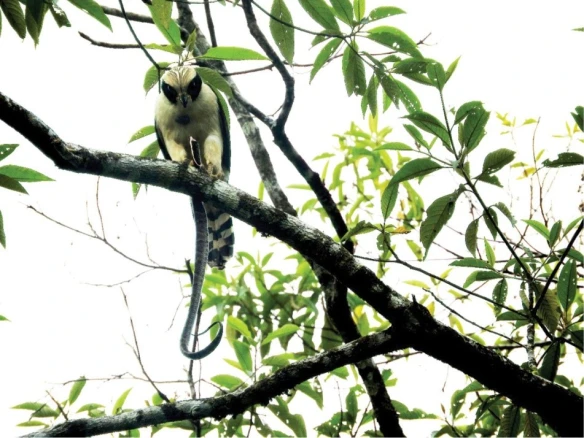

<!DOCTYPE html>
<html lang="pt-br">

<head>
    <meta charset="UTF-8">
    <meta name="viewport" content="width=device-width, initial-scale=1.0">
    <title>Acauã - Herpetotheres cachinnans 1758 </title>

    <link rel="stylesheet" href="https://fonts.googleapis.com/css2?family=Material+Symbols+Outlined">
    <link rel="shortcut icon" href="../../../media/imagens/logo/favicon.ico" type="image/x-icon">

    <link rel="stylesheet" href="../../../estilos/style.css">
    <link rel="stylesheet" href="../../../estilos/pagina-animal.css">

    <link rel="stylesheet" href="../../../estilos/conteudo-especifico-animal.css">
    <link rel="stylesheet" href="../../../estilos/sliders/slider-animalmuseu.css">
</head>


<body>
    <header>
        <section id="titulo">
            
            <h1>Museu de Taxidermia do IFMG</h1>
            <span id="menu-icon" class="material-symbols-outlined esconderNoDesktop"
                onclick="toggleSidebar()">menu</span>
        </section>
    </header>

    <nav>
        <ul id="barra-lateral">
            <li onclick="toggleSidebar()"><span id="close" class="material-symbols-outlined">close</span></li>
            <li class="home"><a href="../../index.html"><span class="material-symbols-outlined">home</span> Página
                    inicial </a></li>
            <li><a href="../../animais.html">Animais</a></li>
            <li><a href="../../taxidermia.html">Taxidermia</a></li>
            <li><a href="../../quemsomosnos.html">Quem somos nós?</a></li>
            <li><a href="../../Jogos_interativos.html">Jogos interativos</a></li>
            <li><a href="../../feedback.html">Feedback</a></li>
            <li><a href="../../cadastro.html">Contato</a></li>
        </ul>
        <ul id="barra-navegacao" class="esconderNoMobile">
            <li class="esconderNoMobile home"><a href="../../index.html"><span class="material-symbols-outlined">
                        home
                    </span></a></li>
            <li class="esconderNoMobile"><a href="../../animais.html">Animais</a></li>
            <li class="esconderNoMobile"><a href="../../taxidermia.html">Taxidermia</a></li>
            <li class="esconderNoMobile"><a href="../../quemsomosnos.html">Quem somos?</a></li>
            <li class="esconderNoMobile"><a href="../../Jogos_interativos.html">Jogos interativos</a></li>
            <li class="esconderNoMobile"><a href="../../feedback.html">Feedback</a></li>
            <li class="esconderNoMobile"><a href="../../cadastro.html">Contato</a></li>
        </ul>
    </nav>

    <script src="../../../javascript/links_atuais.js" defer></script>

    <main>

        <div id="tituloEimagem">
            <div id="imagem-animal" class="slider">
                <div class="slider-track">
                    <div class="slide"
                        style="background-image: url('../../../media/imagens/animal-especifico/aves/Herpetotheres cachinnans/acaua.jpg')">
                        <div class="caption">
                            <span>Foto do animal na vida real</span>
                        </div>
                    </div>
                    <div class="slide"
                        style="background-image: url('../../../media/imagens/animal-especifico/aves/Herpetotheres cachinnans/acaua-museu.jpg')">
                        <div class="caption">
                            <span>Foto do animal no museu</span>
                        </div>
                    </div>
                </div>
                <div class="slider-nav">
                    <button class="slider-btn prev">❮</button>
                    <button class="slider-btn next">❯</button>
                </div>
            </div>

            

            <script src="../../../javascript/slider-animalmuseu.js"></script>

            <div id="infogeral">
                <div id="titulo-imagem">
                    <h2>Acauã</h2>
                    <h3><i>Herpetotheres cachinnans</i></h3>
                </div>
                <div id="descricao">
                    <div class="nature-title"><span>Introdução</span></div>
                    <h2>Introdução</h2>
                    <p>O Acauã <i></i>Dinomus mesomelas é uma espécie de ave da família Falconidae, conhecida por seu voo rápido e suas habilidades de caça. Esse falcão é encontrado principalmente em regiões da América do Sul, como no Brasil, onde habita áreas de cerrado e vegetação aberta. Caracteriza-se por seu corpo esbelto, plumagem que mistura tons de cinza e branco, e seu olhar penetrante, típico das aves de rapina.</p>
                </div>
            </div>
        </div>

        <hr style="height: 4px; background-color: #283618; margin-bottom: 10px;">

        <section id="conteudo-especifico"> <!-- Parte de texto puro -->


            <div class="class-cien template">
                <h2>1. Classificação Científica</h2>
                <p>
                    <strong class="f">Nome Científico:</strong> <i>Herpetotheres cachinnans</i> 1758<br>
                    <strong class="f">Nomes Populares:</strong> macauá, acanã, cuã, cauã, coã, deus￾quer-um, bispo, gavião-coveiro, cobreiro, papa-cobra, 
                    uacanã e macaguá.
                    <br>
                    <strong>Classificação Taxonômica:</strong>
                <div class="classification-list">
                    <p><strong class="preto">Domínio:</strong> <a
                            href="" target="_blank"
                            rel="external">Eukaryota</a></p>

                    <p><strong class="preto">Reino:</strong> <a
                            href="https://www.infoescola.com/biologia/introducao-ao-reino-animal/" target="_blank"
                            rel="external">Animalia</a></p>

                    <p><strong class="preto">Filo:</strong> <a
                            href="https://brasilescola.uol.com.br/biologia/chordata.htm" target="_blank"
                            rel="external">Chordata</a></p>

                    <p><strong class="preto">Classe:</strong> <a
                            href="https://www.infoescola.com/biologia/aves/" target="_blank"
                            rel="external">Aves</a></p>

                    <p><strong class="preto">Ordem:</strong> <a
                            href="https://www.wikiaves.com.br/wiki/falconidae" target="_blank"
                            rel="external"> Falconiformes</a></p>

                    <p><strong class="preto">Família:</strong> <a href="https://www.wikiaves.com.br/wiki/falconidae"
                            target="_blank" rel="external">Falconídeos</a></p>

                    <p><strong class="preto">Gênero:</strong> <a href="https://www.wikiaves.com.br/wiki/acaua"
                            target="_blank" rel="external">Herpetotheres</a></p>

                    <p><strong class="preto">Espécie:</strong> <a
                            href="https://www.wikiaves.com.br/wiki/acaua" target="_blank"
                            rel="external"> H. cachinnans
                        </a></p>
                </div>
                </p>
            </div>


            <hr style="height: 4px; background-color: #283618; margin-bottom: 40px;">


            <div class="reproducao template">
                <h2>2. Aspectos Reprodutivos</h2>
                <div class="reproducao">
                    <p>O <i>Herpetotheres cachinnans</i> é monogâmico e ocorre principalmente na estação chuvosa. Durante o cortejo, o macho usa vocalizações intensas e oferece alimentos à fêmea. Os ninhos são feitos em árvores altas, onde a fêmea põe de 1 a 3 ovos. A incubação dura cerca de 28 a 30 dias, e ambos os pais cuidam dos filhotes até que estejam independentes.</p>

                    <div class="separador"></div>
                    <div class="caracteristicas">
                        <p><strong>Características Reprodutivas:</strong></p>
                        <ul>
                            <li> A fêmea põe de 1 a 3 ovos, que são incubados por cerca de 28 a 30 dias.
                                  Ambos os pais alimentam e protegem os filhotes até que estejam prontos para se tornarem independentes.</li>
                        </ul>
                    </div>
                </div>
            </div>


            <hr style="height: 4px; background-color: #283618; margin-bottom: 40px;">


            <div class="extincao template">
                <h2>3. Risco de extinção</h2>

                <p>
                    O status de conservação do <i>Herpetotheres cachinnans</i> é classificado como <strong>Pouco
                        Preocupante
                        (LC)</strong> Apesar disso, a ave pode enfrentar ameaças locais, como:
                        Perda de Habitat,
                        Caça e
                        Uso de Pesticidas.
                </p>
            </div>


            <hr style="height: 4px; background-color: #283618; margin-bottom: 40px;">


            <div class="ocorrencia template">
                <h2>4. Ocorrência</h2>
                <p> O acauã ocorre em diversos  
                    </p>
                <div class="bioma"><strong>Amazônia:</strong>Na Amazônia, as ocorrências de Acauã se regavião-acauã ,
                    a presença do acauã é relevante também no contexto ecológico, pois, como predador, desempenha um papel importante no controle do trânsito de pequenos animais, como roedores e répteis, ajudando a manter o equilíbrio dos ecossistemas. Além disso, a ave aparece em muitas narrativas e canções populares da Amazônia, inserindo-se no imaginário local como uma figura ligada à natureza e à sabedoria popular.
                </div>
                <div class="bioma"><strong>Cerrado:</strong> No Cerrado, a dieta do acauã é composta por pequenos vertebrados, como roedores, lagartos, cobras e até outras aves, desempenhando um papel essencial no controle das populações desses animais e no equilíbrio ecológico. Sua presença é um indicador de saúde ambiental, já que a espécie tende a frequentar áreas com pouca intervenção humana.</div>
                <div class="bioma"><strong>Mata Atlântica:</strong>Além de sua função ecológica, o acauã também é uma figura presente no imaginário popular em áreas rurais da Mata Atlântica. Seu canto característico, alto e repetitivo, é frequentemente associado a presságios, sendo cercado por crenças e superstições. Algumas comunidades veem como um sinal de mau agouro, enquanto outras associam seu som a mudanças no clima ou à chegada de chuvas.</div>
                <div class="bioma"><strong>Pantanal:</strong>  Ecologicamente, o acauã desempenha um papel fundamental no controle de trânsito de pequenos vertebrados, como roedores, cobras, lagartos e pequenas aves. 
                    Culturalmente, o acauã é conhecido pelas comunidades pantaneiras, que frequentemente associam seu canto a presságios ou mudanças climáticas, como a chegada de chuvas. Ave integra o imaginário popular, sendo mencionado em histórias e referências locais.
                </div>
                <p>
                    Em termos de distribuição geográfica no Brasil, a espécie abrange estados como <strong
                        class="preto">Acre, Alagoas, Goiás, Minas Gerais, Paraná, dentre outros... </Table></strong>. Essa ampla distribuição reflete sua capacidade de adaptação a
                    diferentes condições climáticas e ambientais.
                </p>

                
                <a class="mapa-completo" href="https://portal-espacial.sibbr.gov.br/spatial-hub/?q=lsid:257562"
                    rel="external" target="_blank"
                    onclick="alert('Esse recurso pode não funcionar bem em alguns dispositivos!')">
                    Ver mapa interativo
                </a>
            </div>


            <hr style="height: 4px; background-color: #283618; margin-bottom: 40px;">


            <div class="dieta template">
                <h2>5. Dieta e Hábitos Alimentares</h2>
                <p><strong class="diferente">Hábitos Alimentares:</strong> O <i>Herpetotheres cachinnans</i> possui uma dieta carnívora,
                  que reflete seu papel como um predador importante no equilíbrio ecológico.  </p>
                <p><strong class="diferente">Principais alimentos:</strong></p>
                <ul>
                    <li><strong>Peixes de água doce</strong> </li>
                    <li><strong>Frutas nativas</strong> </li>
                    <li><strong>Mandioca</strong> </li>
                    <li><strong>Castanha-do-pará</strong> </li>
                    <li><strong>Coco</strong> 
                    </li><li><strong>Tubérculos e raízes</strong> </li>
                    <li><strong>Folhas e ervas locais</strong>
                    <li><strong>Serpentes pequenas</strong>

                            <div class="image-container">
                                
                    <div class="caption">Registro da alimentação da  <i style="color: white;">Herpetotheres cachinnans</i>
                       alimentando-se de uma cobra</div>
                    
                </ul>

            <hr style="height: 4px; background-color: #283618; margin-bottom: 40px;">


            <div class="morfologia template">
                <h2>6. Coloração e Morfologia</h2>
                <h3>Coloração:</h3>
                <p>A coloração do <i>Herpetotheres cachinnans</i> (Acauã) varia bastante conforme a região onde ele vive.
                    
                    
                    
                           A impressionante coloração do Acauã, com sua cabeça branca e faixa preta ao redor dos olhos, não é apenas uma característica estética, mas uma adaptação vital para a sobrevivência. A "máscara" preta auxilia na camuflagem, permitindo que ele passe despercebido entre sombras e folhagens enquanto caça suas presas. Além disso, essas marcas distintas são ferramentas de comunicação dentro da espécie, facilitando a identificação entre indivíduos. </p>

                <h3>Morfologia:</h3>
                <div class="highlight">
                    <p><strong>Comprimento médio:</strong> entre 45 e 56 cm </p>
                    <p><strong>Formato do corpo:</strong>compacto e robusto.</p>
                    <p><strong>Peso:</strong> aproximadamente entre 550 a 650g</p>
                    <p><strong>Cabeça:</strong> proporcionalmente grande, com olhos afiados e uma "máscara" preta que lhe confere uma expressão intimidadora.</p>
                    <p><strong>Bico:</strong> curvo e afiado, sendo ideal para rasgar a carne de suas presas.</p>
                </div>
                <p>O Acauã é uma ave diurna. Ele é mais ativo durante o dia, especialmente nas primeiras horas da manhã e no final da tarde, quando está caçando ou patrulhando seu território. Suas atividades diurnas permitem que ele aproveite a luz do dia para localizar e capturar suas presas de maneira eficiente.</p>

            </div>


            <hr style="height: 4px; background-color: #283618; margin-bottom: 40px;">


            <div class="nutricao template">
                <h2>7. Nutrição</h2>
                <p>Alimenta-se principalmente de cobras, das quais tornou-se famoso exterminador, apesar de caçar principalmente espécies inofensivas, como a cobra-cipó. Também alimenta-se de roedores, répteis e parasitas do gado doméstico.</strong>
                    
                </p>
            </div>

            <hr style="height: 4px; background-color: #283618; margin-bottom: 40px;">

            <div class="importancia template">
                <h2>8. Papel ecológico</h2>
                <p> O acauã desempenha um papel crucial no ecossistema como predador de topo. Ele ajuda a controlar as populações de pequenos vertebrados, como aves, roedores e répteis, evitando desequilíbrios ecológicos.</p>
            </div>
            
            <hr style="height: 4px; background-color: #283618; margin-bottom: 40px;">

            <div class="predadores template">
                <h2>9. Predadores</h2>
                <div class="predadores">
                    <p>O acauã enfrenta diversos predadores em seu habitat natural. Entre eles, estão répteis maiores que costumam caçá-lo. Os tipos de predadores podem variar dependendo do ambiente onde ele vive.</p>
            
                    <div class="separador"></div>
                    <div class="caracteristicas">
                        <p><strong>Predadores Conhecidos:</strong></p>
                        <ul>
                            <li>Harpia;</li>
                            <li>Felinos Grandes; </li>
                            <li>Serpentes Grandes;</li>
                            
                        </ul>
                    </div>
                </div>
            </div>
            


        </section>
        <!-- Acabou  -->
    </main>

    <footer>
        <section id="footer-content">
            <div class="footer-section">
                <h3>Museu de Zoologia do IFMG</h3>
                <p>&copy; 2024 Museu de Zoologia do IFMG Campus Bambuí</p>
            </div>

            <div class="footer-section">
                <h3>Links Rápidos</h3>
                <ul>
                    <li><a href="../../animais.html">Animais</a></li>
                    <li><a href="../../taxidermia.html">Taxidermia</a></li>
                    <li><a href="../../quemsomosnos.html">Quem somos nós?</a></li>
                    <li><a href="../../Jogos_interativos.html">Jogos interativos</a></li>
                    <li><a href="../../feedback.html">Feedback</a></li>
                    <li><a href="../../cadastro.html">Contato</a></li>
                </ul>
            </div>

            <div class="footer-section">
                <h3>Nos Siga</h3>
                <div class="social-icons">
                    <a target="_blank" href="https://www.instagram.com/geas_ifmg/?hl=pt-br"></a>
                </div>
            </div>

            <div class="footer-section">
                <h3>Contato</h3>
                <p>Email: <a href="mailto:clarice.silva@ifmg.edu.br"
                        style="text-decoration: none; color: #5B85AA">clarice.silva@ifmg.edu.br</a></p>
            </div>
        </section>

        <div id="footer-bottom">
            <p>Desenvolvido por Estudantes do IFMG Campus Bambuí - Curso Técnico em Informática</p>
        </div>
    </footer>

</body>

</html>